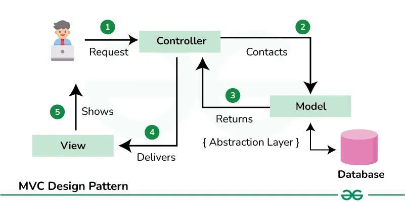
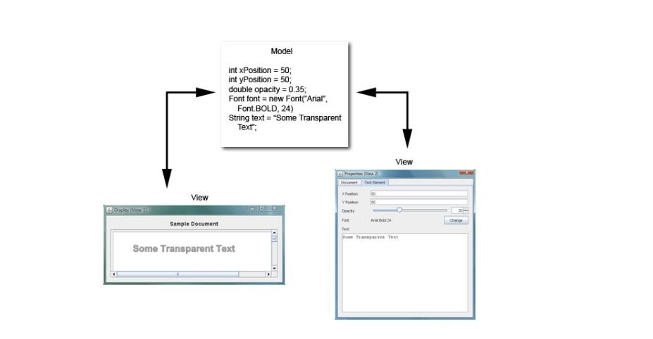

How to split a GUI program into data (Model), screen (View) and glue (Controller). Every slide of Lecture 8 – MVC (10 slides) in order with all code, plus the missing piece the slides leave out (the controller actually wiring the button) and a live demo of several views sharing one model. The final project grades "proper use of Java MVC concept", so this one matters.
12 slide numberIn plain wordsAdded not on the slides
Slides 1–2
The MVC idea
MVC 1
MVC (Model-View-Controller) is a design pattern widely used in software development for separating concerns. It divides the application into three interconnected components:
Model: Represents the data, business logic, and the core functionality of the application.
View: Represents the UI (User Interface) that displays data to the user and sends user input to the controller.
Controller: Acts as an intermediary between the Model and View. It listens to user input, processes it (with help from the Model), and updates the View.
MVC (Model-View-Controller) Architecture in Java 2

① user Request → Controller ② Controller Contacts Model (which sits on an abstraction layer over the Database) ③ Model Returns ④ Controller Delivers to View ⑤ View Shows the user.
Slides 3–8
Model, View, Controller in code
1. Model 3
The Model contains the core data of the application and any logic that manipulates that data. It does not depend on the View or Controller
It encapsulates the application data and logic
The (non-graphical) model part of the program deals with storing, maintaining or manipulating the data.
It has no reference to the view
It controls access to and updates of its data
Example Model (Employee class)
public class Employee {
private String name;
private int age;
// Constructor
public Employee(String name, int age) {
this.name = name;
this.age = age;
}
// Getter and Setter methods
public String getName() {
return name;
}
public void setName(String name) {
this.name = name;
}
public int getAge() {
return age;
}
public void setAge(int age) {
this.age = age;
}
// Method to display employee information
public String displayInfo() {
return "Employee Name: " + name + ", Age: " + age;
}
}
2. View 4–6
The View is responsible for displaying the UI. It takes the data from the Model and presents it to the user. The View also collects user input and sends it to the Controller.
Example View (GUI to display Employee data)
import javax.swing.*;
import java.awt.*;
import java.awt.event.ActionListener;
public class EmployeeView extends JFrame {
private JTextField nameField;
private JTextField ageField;
private JButton showButton;
private JLabel employeeLabel;
// Constructor
public EmployeeView() {
setTitle("Employee Info");
setSize(300, 200);
setDefaultCloseOperation(JFrame.EXIT_ON_CLOSE);
setLayout(new FlowLayout());
// Creating UI components
nameField = new JTextField(10);
ageField = new JTextField(10);
showButton = new JButton("Show Info");
employeeLabel = new JLabel("Employee Details will appear here.");
// Add components to the frame
add(new JLabel("Name:"));
add(nameField);
add(new JLabel("Age:"));
add(ageField);
add(showButton);
add(employeeLabel);
}
// Getters for user input fields
public String getName() {
return nameField.getText();
}
public String getAge() {
return ageField.getText();
}
public void setEmployeeInfo(String info) {
employeeLabel.setText(info);
}
}
3. Controller 7–8
The Controller is the middleman between the Model and View. It handles user actions, processes input data, and updates the Model and View.
The (non-graphical) control part ensures that the user actions result in the desired responses by the program
It receives notifications from the view (user interaction) and modifies the model
Example Controller (Employee Controller)
import java.awt.event.ActionEvent;
import java.awt.event.ActionListener;
public class EmployeeController {
private Employee model;
private EmployeeView view;
// Constructor
public EmployeeController(Employee model, EmployeeView view) {
this.model = model;
this.view = view;
Slide 8
// Controller
class EmployeeController {
private Employee model;
private EmployeeView view;
public EmployeeController(Employee model, EmployeeView view) {
this.model = model;
this.view = view;
}
}
// Main Class
public class Main {
public static void main(String[] args) {
Employee model = new Employee("John", 30);
EmployeeView view = new EmployeeView();
EmployeeController controller = new EmployeeController(model, view);
view.setVisible(true);
}
}
Added · The complete, working version
EmployeeView.java: add this method
// lets the controller react to the button, without the view knowing what happens
public void addShowListener(ActionListener listener) {
showButton.addActionListener(listener);
}
EmployeeController.java
import java.awt.event.ActionEvent;
import java.awt.event.ActionListener;
public class EmployeeController {
private Employee model;
private EmployeeView view;
public EmployeeController(Employee model, EmployeeView view) {
this.model = model;
this.view = view;
view.setEmployeeInfo(model.displayInfo()); // show the starting data
view.addShowListener(new ShowListener()); // wire the button
}
private class ShowListener implements ActionListener {
public void actionPerformed(ActionEvent e) {
try {
// 1. read input from the view
String name = view.getName();
int age = Integer.parseInt(view.getAge().trim());
// 2. update the model
model.setName(name);
model.setAge(age);
// 3. show the model's answer in the view
view.setEmployeeInfo(model.displayInfo());
} catch (NumberFormatException ex) {
view.setEmployeeInfo("Age must be a whole number.");
}
}
}
}
Now the flow matches the slide 2 diagram: the view sends the click (Request) → the controller updates the model (Contacts) → the model's displayInfo() comes back (Returns) → the controller calls setEmployeeInfo (Delivers) → the label changes (Shows).
Try it: the Employee MVC app
Added
Employee Info–□×
Employee Name: John, Age: 30
Model state (Employee object)
Slides 9–10
Why MVC, and many views
Advantages of MVC Pattern 9
Separation of Concerns: MVC separates the user interface (View), data (Model), and logic (Controller), making the code easier to maintain and test.
Scalability: It's easier to scale and expand, such as adding more Views or Controllers.
Reusability: The Model can be reused with different Views or even different Controllers.
When to Use MVC in Java?
Complex Applications: For large-scale applications with complex logic.
GUI Applications: Java Swing, JavaFX, or web applications with different views can benefit from MVC.
Maintainability: When the application needs to be easily maintainable and scalable.
Multiple views on the same model 10
MVC facilitates the development of multiples views on the same model

One Model (xPosition, yPosition, opacity, font, text) and two Views: a Display window and a Properties window. Source: https://miashs-www.u-ga.fr/~davidjer/inff3/2324/inff3-2324-cours9.pdf
Try it: three views, one model
Added
Edit in the Properties view. The controller updates the model, and the model notifies every view.
Properties (View 2)–□×
Display (View 1)–□×
Sample Document
View 3: table
xPosition
yPosition
opacity
text
model
Added · How the model tells several views (observer idea)
import java.util.ArrayList;
public class TextModel {
private int xPosition = 50, yPosition = 50;
private double opacity = 0.35;
private String text = "Some Transparent Text";
// every view that wants updates registers here
public interface ModelListener { void modelChanged(TextModel m); }
private ArrayList<ModelListener> listeners = new ArrayList<>();
public void addModelListener(ModelListener l) { listeners.add(l); }
private void fireChanged() {
for (ModelListener l : listeners) l.modelChanged(this);
}
public void setOpacity(double o) { opacity = o; fireChanged(); }
public void setText(String t) { text = t; fireChanged(); }
public double getOpacity() { return opacity; }
public String getText() { return text; }
// ... same for xPosition / yPosition
}
// in each view:
// model.addModelListener(m -> { label.setText(m.getText()); repaint(); });
This is the same idea Swing itself uses: a JTable listens to its TableModel and a JList to its ListModel (Lectures 3 and 10).